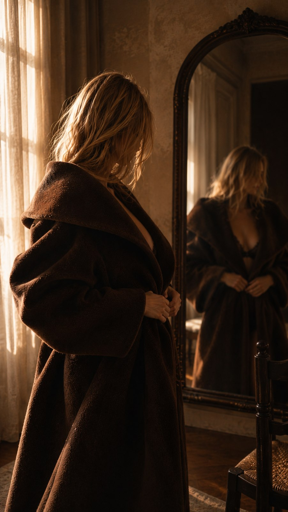
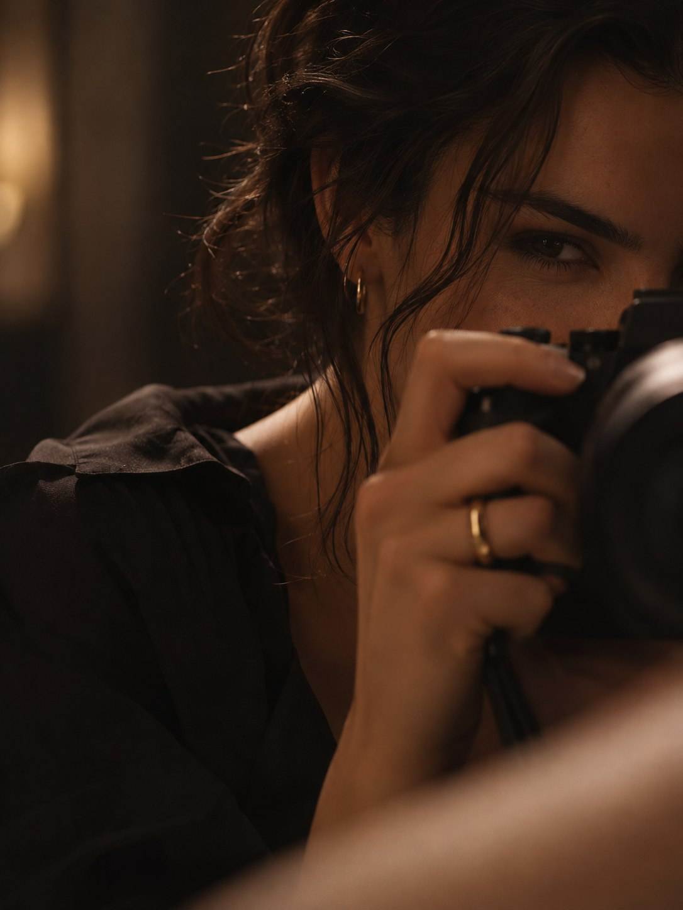
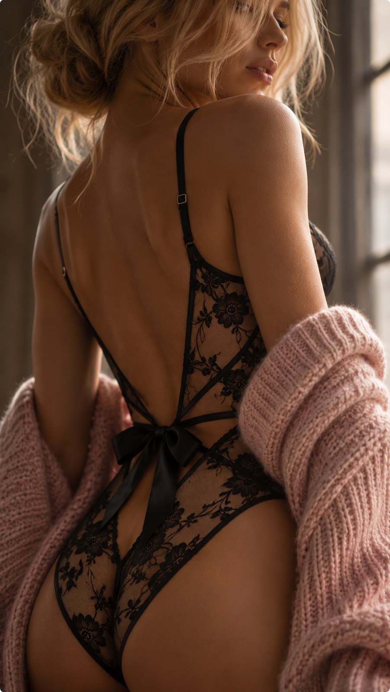

Cinematic AI trailer
Come Closer
Intimate rituals, fleeting encounters and quiet decisions introduce the world of Alura Thorne. An atmospheric trailer for a character who lives by her own rules.
Open on YouTube ↗Digital Character / Luxury / Fashion
An ongoing cinematic character world exploring intimacy, identity and atmosphere. Fashion, interiors and quiet encounters, connected through a consistent visual and sonic language.
Explore 8 films ↓
WATCH THE WORK
Cinematic AI trailer
Intimate rituals, fleeting encounters and quiet decisions introduce the world of Alura Thorne. An atmospheric trailer for a character who lives by her own rules.
Open on YouTube ↗AI character film
An ordinary afternoon quietly becomes something else: changes of clothes, a camera shutter and small gestures between photographs. An intimate glimpse into the moments when the camera is supposed to be off.
Open on YouTube ↗
AI character film
A light left on, a quiet room and a moment that does not need to end. Alura Thorne explores desire, anticipation and the invitations that remain unspoken.
Open on YouTube ↗
AI character film
A kind gesture, a familiar song and an unexpected connection make a quiet day feel less lonely. An intimate short about everyday kindness and the comfort of having someone beside you.
Open on YouTube ↗
AI character film
Through quiet gestures and fleeting thoughts, Alura reflects on what to hold on to and what to release. A character short about control, letting go and knowing what matters.
Open on YouTube ↗
AI character film
Something small brings a memory back, carrying Alura to a moment and a version of herself she thought she had left behind. For a moment, she lets it stay.
Open on YouTube ↗
AI character film
Morning light, coffee, fabric and small gestures reveal Alura through her everyday rituals. A quiet character study told through body language, detail and visual rhythm.
Open on YouTube ↗AI character film
Alura moves through a Mediterranean coastal town in the warm evening light. Elegant movement and intimate details connect character with the atmosphere of the Costa Brava.
Open on YouTube ↗PROJECT STILLS & START FRAMES




